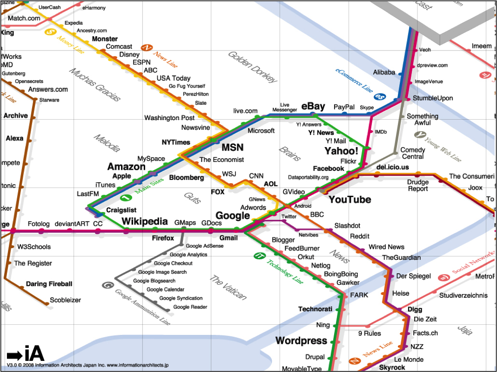

Création d'Applications sur Internet
Chapitre5a: Langage PHP
Fatemeh BORRAN
Sommaire
- Pages statiques vs. dynamiques
- Serveur Web
- Bases du langage PHP
- Ecrire du code PHP
- Séquence d'instructions
- Variables (Simple, Composite)
- Opérations (arithmétiques, logiques, comparaisons)
- Fonction
echo - Sélection avec
if - Boucles
foretwhile - Fonction
isset
Pages statiques
- Rappel: Jusqu'à présent, nous avons étudié HTML, qui est un langage permettant de décrire des pages Web.
- HTML seul (i.e. sans l'aide d'un autre langage) ne permet de réaliser que des pages statiques:
- Un fichier HTML correspond à un et un seul contenu;
- Pour créer un nouveau contenu, il faut créer un nouveau fichier.
- Mais alors comment sont faits les sites comme FlickR, FaceBook, Youtube, les moteurs de recherche ou les Blogs?
- Est-ce qu'ils sont constitués de milliers de fichiers HTML différents? Que se passerait-il alors si leur webmaster décidait d'ajouter une fonctionnalité (ex: voter pour une page)?
Pages dynamiques
- Divers langages de programmation peuvent être utilisés conjointement avec HTML pour réaliser des pages Web dynamiques, où le contenu pourra varier en fonction:
- Des paramètres reçus depuis un formulaire;
- Des informations récoltées sur le visiteur;
- Du contenu d'une base de données;
- Etc.
- Dans ce cours, nous aborderons le langage PHP.
- Important: La page Web affichée dans le navigateur est toujours en HTML. Mais son code HTML est en partie généré automatiquement à l'aide d'un script. Du point de vue de l'utilisateur, il n'y a aucune différence entre une page statique ou une page dynamique.
Pages statiques vs. dynamiques
- Pages statiques: exécutées uniquement sur le navigateur du client.
- Pages dynamiques: exécutées d'abord sur le serveur pour produire du HTML, puis sur le navigateur du client.
Pages dynamiques avec PHP
- PHP est un langage de script, que l'on incorpore dans une page HTML normale et qui est exécuté sur le serveur Web.
- Lorsqu'un client envoie une requête pour obtenir une page PHP:
- Le serveur exécute le script PHP;
- Le script va éventuellement envoyer des requêtes vers une base de données comme MySQL pour récupérer des données (cet aspect ne sera pas traité dans ce cours);
- Sur la base de ces informations, le script PHP génère une page HTML standard;
- Le serveur renvoie le code HTML ainsi généré au client, qui pourra l'afficher comme n'importe quelle page statique.
Visualisation de pages dynamiques
- Comme nous l'avons vu, une page statique peut être visualisée directement depuis le navigateur Web.
- Une page dynamique doit être interprétée avant de pouvoir être visualisée. Elle ne peut donc pas être visualisée depuis l'explorateur de fichiers.
- Pour visualiser une page dynamique, on devra donc la placer sur un serveur Web capable d'interpréter le code dynamique.
Serveur Web
- Pour naviguer sur un site Web dynamique, celui-ci doit être déployé sur un serveur distant (hébergeur), ou sur un serveur local:
- Chez un hébergeur Web supportant un langage de script (ex: PHP, ASP, ...)
- Sur sa machine en local en utilisant les logiciels
- Serveur WAMP (Windows) MAMP (MAC OS)
- EasyPHP
- Apache HTTP serveur
- Dans ce cours nous allons utiliser un serveur local (avec EasyPHP).
Serveur Web - EasyPHP
- Installer EasyPHP sur sa machine;
- Placer les fichiers du site dans le répertoire
www; - Démarrer EasyPHP;
- Accéder à son site avec l'adresse suivante:

- Important: si vous tentez d'accéder à la page par le système de fichiers, le code PHP ne sera pas interprété:

http://127.0.0.1/maPage.php
C:/wamp/www/maPage.php
Ecrire du code PHP (1/2)
- Une page PHP est essentiellement identique à une page HTML. Comme pour HTML, il s'agit d'un simple fichier texte contenant du code.
- On donnera l'extension
.phpà une page PHP, au lieu de.html(pour indiquer au serveur qu'il doit interpréter la page avant de la retourner). - On peut insérer du code PHP directement dans le code HTML, aux endroits où l'on souhaite appliquer des traitements dynamiques (calculs, affichages, ...).
- Pour délimiter des zones de code PHP placés dans une page HTML, on utilise les délimiteurs
<?phpet?>.
Ecrire du code PHP (2/2)
Le code PHP n'apparaît pas dans la page HTML reçue par le client. Seul le résultat de son interprétation apparaîtra.
<?php
/* (une série d'instructions PHP ici ...)
(par exemple : récupération des données d'un formulaire) */
?>
<!DOCTYPE html>
<html>
<head>
<title><?php (CODE PHP ICI) ?></title>
</head>
<body>
<h1> Bonjour <?php (CODE PHP ICI) ?> ! </h1>
<p> Voici une photo : </p>
<img src="<?php (CODE PHP ICI) ?>"/>
</body>
</html>
Séquence d'instructions
- Une instruction correspond à un ordre donné à PHP de la part du programmeur. Les instructions peuvent être de différentes natures:
- Définition d'une variable;
- Appel d'une fonction;
- Etc.
- Chaque instruction PHP doit être terminée par un point-virgule:
;. - En général, on s'arrangera pour n'écrire qu'une instruction par ligne.
Variables
- Tout comme en mathématiques, une variable est une boîte portant un nom symbolique et contenant une valeur.
- Le nom d'une variable PHP commence toujours par le caractère
$, suivi d'une lettre ou d'un trait de soulignement, puis d'une série de lettres, chiffres ou traits de soulignement. - Exemples de variable correcte:
- Exemples de variable fausse:
$maVariable, $i, $nom_de_famille, $j23
$1234, maVariable, $test#1, $ma variable
Types de variables: simples
- Une variable PHP peut indifféremment contenir une valeur numérique, une chaîne de caractères, une valeur booléenne, etc.
- On utilise l'opérateur
=pour affecter une valeur à une variable (la valeur peut être calculée à partir d’une autre variable).
<?php
$nom = "Noël"; /* une chaîne de caractères */
$prenom = "Bernie"; /* une chaîne de caractères */
$photo = "Bernie_Portrait.jpg"; /* une chaîne de caractères */
$naissance = 1982; /* valeur numérique de type entier */
$age = 2014 - $naissance; /* valeur numérique de type entier */
$taille = 1.78; /* valeur numérique de type décimal */
$en_vie = true; /* valeur booléenne */
$marie = false; /* valeur booléenne */
?>
Types de variables: tableaux
- Un tableau (ou un array) est une variable composée qui peut prendre plusieurs valeurs.
- Il y a deux types de tableaux:
- Les tableaux numérotés
- Les tableaux associatifs
Les tableaux numérotés
Le code PHP suivant:
<?php
// La fonction array permet de créer un array
$prenoms = array('François', 'Michel', 'Nicole');
?>
est équivalant à:
<?php
$prenoms[0] = 'François';
$prenoms[1] = 'Michel';
$prenoms[2] = 'Nicole';
?>
on peut afficher un élément du tableau en utilisant:
<?php
echo $prenoms[1];
?>
Les tableaux associatifs
Le code PHP suivant:
<?php
$coordonnees = array (
'prenom' => 'François',
'nom' => 'Dupont',
'adresse' => '3 Rue du Paradis',
'ville' => 'Marseille');
?>
est équivalant à:
<?php
$coordonnees['prenom'] = 'François';
$coordonnees['nom'] = 'Dupont';
$coordonnees['adresse'] = '3 Rue du Paradis';
$coordonnees['ville'] = 'Marseille';
?>
on peut afficher un élément du tableau en utilisant:
<?php
echo $coordonnees['ville'];
?>
Opérations arithmétiques
Opérations de base: addition (+); soustraction (-); multiplication (*); division (/); modulo (%)
<?php
$nombre = 5 + 2; // La variable nombre prend la valeur 7
$nombre = 5 - 2; // La variable nombre prend la valeur 3
$nombre = 5 * 2; // La variable nombre prend la valeur 10
$nombre = 5 / 2; // La variable nombre prend la valeur 2
$nombre = 5 % 2; // La variable nombre prend la valeur 1
// Allez on rajoute un peu de difficulté
$nombre = 5 + 2 * 3; // La variable nombre prend la valeur 11
$nombre = (5 + 2) * 3; // La variable nombre prend la valeur 21
$nombre = $nombre – 9.6; // La variable nombre prend la valeur 11.4
?>
Opérations logiques
Opérations de base: AND (et); OR (ou); ! (inversion).
<?php
$op1 = true; // op1 est vrai
$op2 = false; // op2 est faux
// Opération et
$op3 = ($op1 AND $op1); // op3 est vrai
$op4 = ($op1 AND $op2); // op4 est faux
$op5 = ($op2 AND $op2); // op5 est faux
// Opération ou
$op6 = ($op1 OR $op1); // op6 est vrai
$op7 = ($op1 OR $op2); // op7 est vrai
$op8 = ($op2 OR $op2); // op8 est faux
// Opréation inversion
$op9 = ! $op1; // op9 est faux
?>
Opérations comparaisons
Opérations de base: == (égalité); != (inégalité); <; >; <=; >=
<?php
$nombre1 = 2;
$nombre2 = 5;
$cond1 = ($nombre1 == $nombre2); // cond1 est faut
$cond2 = ($nombre1 != $nombre2); // cond2 est vrai
$cond3 = ($nombre1 < $nombre2); // cond3 est vrai
$cond4 = ($nombre1 > $nombre2); // cond4 est faut
$cond5 = ($nombre1 <= $nombre1); // cond5 est vrai
$cond6 = ($nombre2 >= $nombre2); // cond6 est vrai
?>
Concaténation
- On peut assembler du texte (chaine de caractères; string en anglais) et des variables.
- Concaténation est une opération sur les chaines de caractères.
<?php
$bonjour = "Hello";
$monde = " world!";
$salutation = $bonjour . $monde;
// salutation prend la valeur "Hello world!"
$age = 17;
$texte = "Le visiteur a " . $age . " ans";
// texte prend la valeur "Le visiteur a 17 ans";
?>
La fonction echo
- PHP fournit un certain nombre de fonctions permettant en principe d'appliquer des traitements aux variables, et éventuellement de retourner une valeur.
- Une fonction est caractérisée par un nom, suivi d'une paire de parenthèses dans lesquelles on placera éventuellement une série de paramètres.
echo $maVariable: Permet d'afficher la valeur de la variable$maVariabledans le code HTML, à l'emplacement où l'instruction PHP apparaît dans le code.echo "texte": Permet d'afficher le texte entre"et"
<?php
$texte = "On peut utiliser des \" dans texte.";
echo $texte; // On peut utiliser des " dans texte.
?>
Exemple d'utilisation de echo
<?php
$titre = "Page Personnelle de Bernie";
$nom = "Bernie";
$photo = "Bernie_Portrait.jpg";
?>
<!DOCTYPE html>
<html>
<head>
<title><?php echo $titre; ?></title>
</head>
<body>
<h1> Bonjour <?php echo $nom; ?> ! </h1>
<p> Voici une photo : </p>
<img src="<?php echo $photo; ?>"/>
</body>
</html>
Résultat de l'exemple précédent
- Page reçue par le client lorsqu'il demande la page PHP au serveur Web.
- Notez qu'il ne voit que le résultat de l'exécution du script:
<!DOCTYPE html>
<html>
<head>
<title>Page Personnelle de Bernie</title>
</head>
<body>
<h1> Bonjour Bernie ! </h1>
<p> Voici une photo : </p>
<img src="Bernie_Portrait.jpg"/>
</body>
</html>
Sélection (1/2)
- Une sélection (ou structure conditionnelle) est une structure de contrôle permettant de n'exécuter une série d’instructions que si une condition donnée est vraie.
- On utilise le mot-clé
if(si) pour effectuer une sélection en PHP. La syntaxe précise est la suivante:
<?php
if (/* condition à tester */) {
/* instructions à exécuter si la condition est vraie */
}
?>
Sélection (2/2)
- Les mots-clé
else(sinon) etelse if(sinon si) s'utilisent en complément auif, et permettent de définir des blocs dans lesquels les instructions ne seront exécutées que si la condition duifprécédent est fausse.
<?php
if (/* condition 1 à tester */) {
/* instructions exécutées si la condition 1 est vraie */
} else if (/* condition 2 à tester */) {
/* instructions à exécutées si la condition 2 est vraie */
} else {
/* instructions exécutées si aucune des deux conditions n'est vraie */
}
?>
Exemple de sélection
<?php
$prenom = "Bernie";
$nom = "Noel";
?>
<!DOCTYPE html>
<html>
<head><title>Page Bonjour</title></head>
<body>
<?php
if ($prenom == "Bernie") {
echo "<b>Bonjour Bernie !</b>";
} else {
echo "<b>Bonjour inconnu !</b>";
}
?>
</body>
</html>
Résultat de l'exemple précédent
- Page reçue par le client lorsqu'il demande la page PHP au serveur Web. Notez que si la variable
$prenomavait contenu une autre valeur que"Bernie", le résultat aurait été différent.
<!DOCTYPE html>
<html>
<head><title>Page Bonjour</title></head>
<body>
<b>Bonjour Bernie !</b>
</body>
</html>
Exemple de condition complexe
- Une condition peut être relativement complexe. Avec les opérateur
AND(et),OR(ou) et!(inversion) il est possible d'exprimer n'importe quelle condition logique.
<?php
$prenom = "Ernest";
$nom = "Noel";
$marie = TRUE;
if (!marie OR ($prenom != "Bernie" AND $nom == "Noel")) {
echo "Soit tu n'es pas marié, soit tu es de
la famille de Bernie (mais pas Bernie),
ou alors tu es les deux à la fois !";
}
?>
Boucles (1/2)
- Une boucle permet de répéter des instructions plusieurs fois.
- Ceci est pour un gain du temps et d’espace; en pratique indispensable.
- Comment fonctionne une boucle?
- comme d'habitude, les instructions sont d'abord exécutées dans l'ordre, de haut en bas (flèche rouge);
- à la fin des instructions, on retourne à la première (flèche verte);
- on recommence à lire les instructions dans l'ordre (flèche rouge);
- et on retourne à la première(flèche verte);
- etc.,etc.
Boucles (2/2)
- Le seul problème dans ce schéma est que ça ne s'arrête jamais!
- Les instructions seraient réexécutées à l'infini! C'est pour cela que, quel que soit le type de boucle (
whileoufor), il faut indiquer une condition. - Tant que la condition est remplie, les instructions sont réexécutées.
- Dès que la condition n'est plus remplie, on sort enfin de la boucle.
Boucle while
whilepeut se traduire par "tant que".- Ici, on demande à PHP: tant que
$continuer_boucleest vrai, exécuter ces instructions. - Les instructions qui sont répétées en boucle se trouvent entre les accolades
{et}.
<?php
while ($continuer_boucle == true) {
// instruction à exécuter dans la boucle
}
?>
Exemple de boucle while
<?php
$nombre_de_lignes = 1;
while ($nombre_de_lignes <= 100) {
echo 'Ceci est la ligne n°' . $nombre_de_lignes . '<br/>';
$nombre_de_lignes++;
}
?>
Boucle for
forest un autre type de boucle, dans une forme un peu plus condensée et plus commode à écrire.- Cependant, sachez que
foretwhiledonnent le même résultat et servent à la même chose: répéter des instructions en boucle. - L'une peut paraître plus adaptée que l'autre dans certains cas, cela dépend aussi des goûts.
<?php
for (initialisation; condition; mise-à-jour) {
// instruction à exécuter dans la boucle
}
?>
Exemple de boucle for
<?php
for ($nombre_de_lignes = 1; $nombre_de_lignes <= 100; $nombre_de_lignes++) {
echo 'Ceci est la ligne n°' . $nombre_de_lignes . '<br/>';
}
?>
Boucle while ou for?
- La boucle
whileest plus simple et plus flexible: on peut faire tous les types de boucles avec mais on peut oublier de faire certaines étapes comme l'incrémentation de la variable! - En revanche,
forest bien adapté quand on doit compter le nombre de fois que l'on répète les instructions et il permet de ne pas oublier de faire l'incrémentation pour augmenter la valeur de la variable! - Si vous hésitez entre les deux, il suffit simplement de vous poser la question suivante: "Est-ce que je sais d'avance combien de fois je veux que mes instructions soient répétées?". Si la réponse est oui, alors la boucle
forest tout indiquée. Sinon, alors il vaut mieux utiliser la bouclewhile.
La fonction isset
isset($maVariable): Permet de savoir si la variable$maVariablea été définie au préalable (si elle contient une valeur).- On utilisera en général cette fonction dans la condition d'une sélection pour savoir si une variable peut être utilisée (si elle vient d'un formulaire notamment).
<?php
if ( ! isset($test) ) {
echo "La variable $test n'est pas définie !";
} else {
echo "La variable $test vaut : " . $test;
}
?>
Références
- Manuel de référence du langage PHP: http://www.php.net/manual/fr/
- Un tutoriel en anglais sur W3Schools: http://www.w3schools.com/php/php_intro.asp
- Editeur enligne pour PHP: http://phpfiddle.org/
Questions?!
Année 2015-2016 - Fatemeh Borran - /